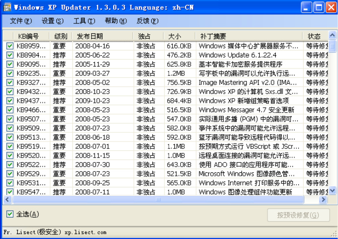
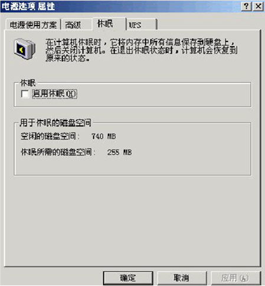
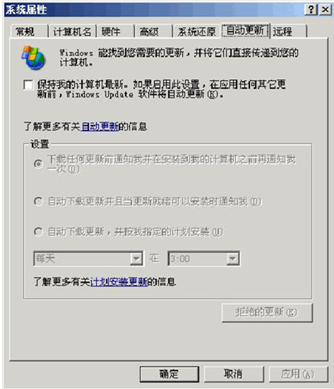
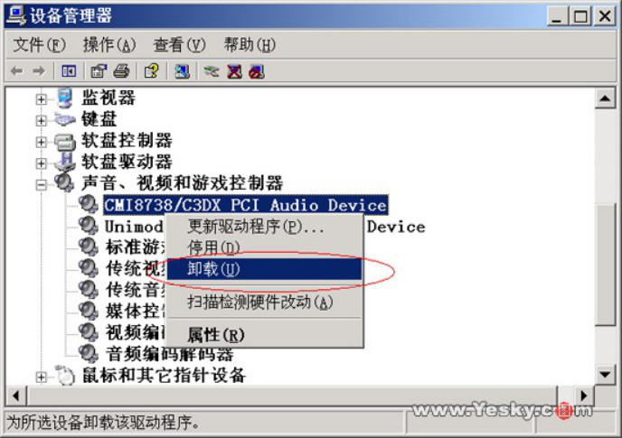
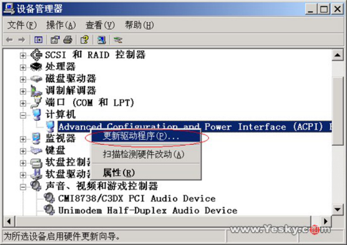
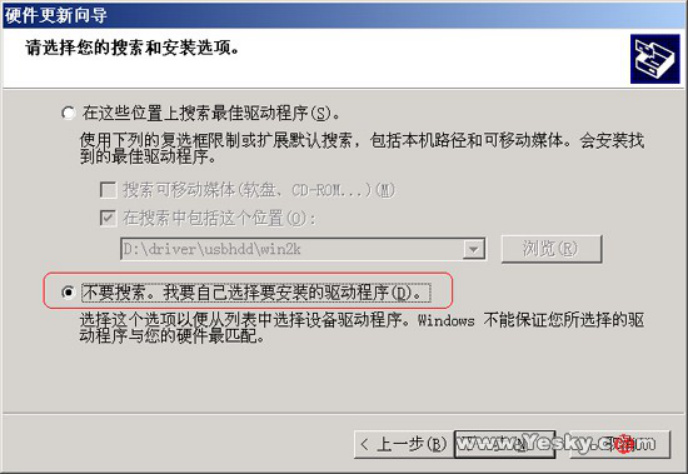
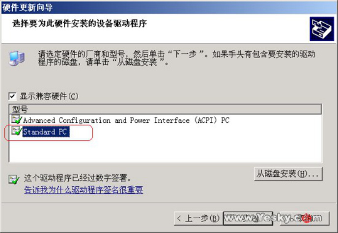
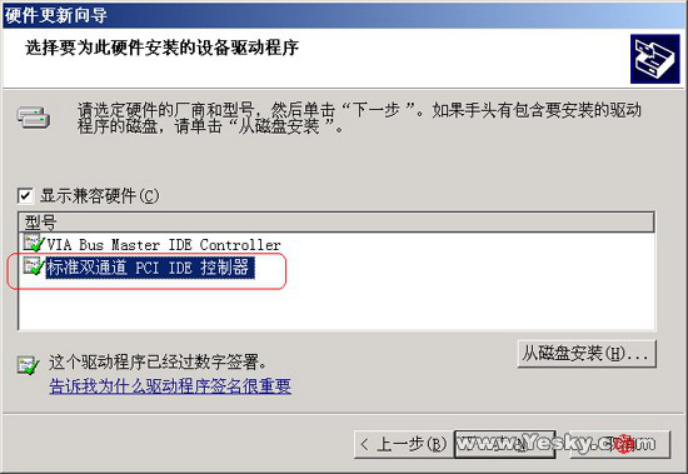
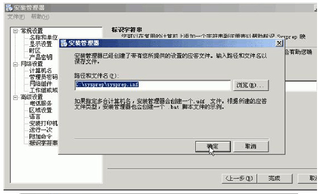
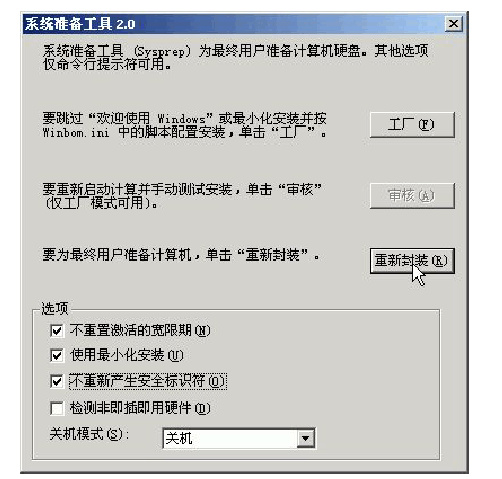

【失效教程】制作一张自己专属的系统光盘
很多人电脑坏了也不愿意重做系统，因为重做系统需要重新安装软件，这是一个很浪费时间的操作。那么可不可以制作一张只属于自己的专用系统光盘，当系统安装好之后常用的软件就已经直接安装好了呢？这篇教程将教您制作一张自己专属的系统光盘。
教程可以参考：个人制作 XP 系统万能 Ghost 镜像教程
http://wenku.baidu.com/view/37a01b3a783e0912a2162ae2.html
当然也可以看如下我写的教程（以 XP 为例，其他大同小异）：
必要工具及下载地址：
1. 比较新的 Ghost 系统盘（10 元一张的盗版盘，注：必须是盗版盘）
2. 一张空 DVD 光盘
3. 带有刻录功能的电脑
4.XP updater：http://dl.xp.lisect.com/2015/05/31/UpdaterSetup-CHS-1.3.0.3.exe
5. 魔方清理大师：http://mofang.ruanmei.com/
\6. Sysprep：http://www.xz7.com/dir/21314.html
7.UltraISO：http://cn.ultraiso.net/
8. 光盘刻录大师：http://www.17rd.com/
一、安装 XP 系统
**1.** 安装全新的 XP 系统
首先去系统之家下载一份新版的 XP 系统，安装，或者使用 Ghost 系统盘安装。这样可以免去激活和打补丁的过程。并且后边会用到。
当然，如果不想重做系统，可以使用正在使用的系统，但是请确保系统功能的完整性，不要过度精简。
**2.** 安装最新系统补丁
XP 的原版补丁可以打到 2014 年 4 月份，之后的补丁通过正常方法是无法下载的。但是我们可以使用其他方法来进行下载安装。这里推荐一个软件叫做 XP updater。
XP updater 下载地址 1：http://dl.xp.lisect.com/2015/05/31/UpdaterSetup-CHS-1.3.0.3.exe
XP updater 下载地址 2：http://sourceforge.net/projects/xpupdater/files/
使用方法非常简单，双击打开获取，点击 [按预设修复] 等待就可以了。

**3.** 安装软件
安装你要保留在系统里的，希望在重新制作系统之后能自动安装的软件，包括常用软件，工程软件，驱动程序，运行库等。
软件的总大小的值应满足以下任意一个条件：
1. 原版系统镜像大小 + 软件安装包大小总和 < 4.0G
2. 安装以后的 C 盘占用大小 < 9.0G
如果不满足以上条件，请使用更加小巧的同类软件或者精简版软件。
**4.** 精简系统大小
我们需要精简系统的大小，减小系统总大小以保证能写入一张 4.3G 的 DVD 光盘。
\1. 关闭电源管理的休眠功能
点桌面右键–属性–屏幕保护 — 电源–高级。

这时在 C 盘根目录下的页面文件 hiberfil.sys 会自动删除，大小为你的内存容量。
\2. 关闭系统还原和自动在线更新功能
点我的电脑 — 属性 — 系统还原和自动更新。

\3. 删除备用的动态链接库（dll 文件）
用 SFC 命令可以把 C:\Windows\System\Dellcache 目录内的文件予以删除以释放空间。删除全部文件的命令是 sfc.exe/purgecache，也可以手工删除。
\4. 减小虚拟内存大小
未验证是否有效，但是可以试试：进入虚拟内存设置，将分页大小设置为自动或者设置在其他磁盘上。
\5. 删除临时文件
使用任意一款清理软件清理系统临时文件和缓存文件。
**5.** 杀毒
用随便的杀毒软件进行一次系统扫描以保证系统中没有病毒。
注：如果不想在其他电脑中使用这个镜像，无需进行下列步骤：
（注：第 6 步仅在你想在除了你正在使用的电脑以外的电脑使用你的安装光盘时才进行，否则谨慎进行！）
**6.** 卸载和修改硬件驱动程序（以下内容引自网友 @心梦 ）
打开 “设备管理器”（单击 “我的电脑”→“属性”→“硬件”→“设备管理器”，然后依次序卸载 “网络界面卡”、“通用串行总线控制器”、“声音，视频和游戏控制器”、“监视器”、“显示卡”。具体做法是：在某种硬件名称上单击鼠标右键，选择 “卸载” 就行了（图 3）。

图 3
如果系统要求重新启动，应选 “否”，切勿启动！因为一旦重新启动，系统会重新扫描硬件，刚才所做的改动会全部消失。
接下来，还应在 “设备管理器” 列表中右击 “计算机” 项目下的 “ACPI Uniprocessor PC” 子项，在随后出现的功能菜单中选 “更新驱动程序” 一项（图 4）；在随后出现的对话框中点击 “从列表上或指定位置安装”（图 5），然后点 “下一步” 按钮；接着点选 “不要搜索，我要自己选择要安装的驱动程序”（图 6），再点 “下一步” 按钮；进入 “显示兼容硬件” 页面后，把型号改为 “Standard PC”（图 7）。继续点 “下一步” 按钮，最后点 “完成” 按钮结束修改。之后电脑会提示重新启动电脑，同样不要启动，点 “否” 即可。

图 4
图 5

图 6

图 7
修改完 ACPI 属性后，还应调整 “IDE ATA/ATAPI 控制器” 为 “标准双通道 PCI IDE 控制器”。方法与修改 ACPI 属性一样，记住也不要重新启动电脑（图 8）。

图 8
PS：创建系统自动应答文件，在任何时候都可以，或者自己编辑也可以，不过有一些步骤切不可弄错，那就是卸载和更改硬件驱动之后电脑不可重新启动，也就是说，从卸载驱动和重新封装要一气呵成。
至此，一个 “干净” 的 XP 就精简完成了。
** 二、** 封装系统
我们使用 Sysprep 进行封装。
1. 解压 Sysprep
系统重新封装工具在 WindowsXP 原版安装光盘中已自带（但盗版光盘中并没有）。位置是安装光盘的 (X:\SUPPORT\TOOLS\DEPLOY.CAB) 文件，如果没有请到如下地址下载：
Sysprep 下载地址：http://www.xz7.com/dir/21314.html
接下去我们一步步开始使用这个工具；我们用先在 C 盘根目录下建一个名为 Sysprep 的文件夹，并将 DEPLOY.CAB 压缩包文件用 Winrar 解压缩到 C:\Sysprep
**2.** 创建系统自动应答文件
打开 C:\sysprep\setupmgr.exe 文件→下一步→创建新文件→下一步→选择 Sysprep 安装→下一步→选择自己的系统→下一步→是，完全自动安装→下一步→进入安装管理界面。
在安装管理界面中，只有几个内容是有填写要求的，其他内容按自己喜好填写然后下一步。
\1. 产品密钥
XP 系统产品密钥：
MRX3F-47B9T-2487J-KWKMF-RPWBY (工行版) 可用（强推此号)
QC986-27D34-6M3TY-JJXP9-TBGMD (台湾交大学生版) 可用
CM3HY-26VYW-6JRYC-X66GX-JVY2D 可用
DP7CM-PD6MC-6BKXT-M8JJ6-RPXGJ 可用
F4297-RCWJP-P482C-YY23Y-XH8W3 可装不可升级
\2. 时区
选择 **（+8）北京，重庆 **
\3. 语言
选择中文（简体）
最后来到这个界面，点击确定。

注：这个文件的文件名一定要 sysprep.inf, 所在目录一定要在 c:\sysprep 目录下。
**3.** 系统封装
打开 c:\sysprep\sysprep.exe，确定，进入系统封装界面。

下边四个选项选择前三个即可。
点击重新封装，约半分钟以后系统自动关机。
** 三、** 制作 GHO 镜像
插入一张 Ghost 版的系统光盘，进入 WinPE 微型系统，进入 Ghost，把 C 盘克隆成一个 GHO 镜像，镜像文件名称：WINXPSP3，保存到除 C 盘以外的盘。压缩级别选择（best）。
Ghost 的使用教程可以参考
http://wenku.baidu.com/view/3a94f73a580216fc700afd13.html
** 四、** 制作系统光盘
我们使用 UltraISO 制作系统光盘。
\1. 我们正常打开电脑，初次安装需要大约 10 分钟时间。
\2. 插入 Ghost 系统光盘
\3. 打开 UltraISO
\4. 点击工具→制作光盘映像文件→在输出映像文件的位置选择保存的位置和文件夹名。点击制作，等待大约 10 分钟，点击完成。
\5. 点击文件→打开→选择刚才刚刚制作的文件。
5. 点击操作→添加文件→选择 D 盘的 WIXPSP3.GHO
6. 点击覆盖
7. 点击文件→保存，等待大约 10 分钟，系统镜像制作完成。
8. 使用光盘刻录软件进行刻录，其中刻录速度宜选择慢速（x2.0）。
光盘刻录软件使用教程：
http://wenku.baidu.com/view/57ee59eb998fcc22bcd10dc8.html
至此，一张系统光盘就制作完成了。
** 五、** 常见问题解答
\1. 重新封装时提示 “在试图更新的注册表时出错，无法继续”
在 C:\Windows\ 中新建一个空文件夹，命名为 Repair，即可解决（感谢网友 @赤脚汉 提供解决方法）。
\2. 封装后安装系统时提示缺少文件 “c_20127.nls”
在 sysprep 生成自动应答文件后，打开 sysprep.inf，删除如下行：
InstallFilesPath=C:\sysprep\i386
即可解决（感谢热心网友提供解决方法）。